Harmon Quiz Questions
Speed Quizzes
Movie Dataframe
mr4<-read.csv("./Data/mr4.csv", header=TRUE, stringsAsFactors = FALSE)
mr4[9:13]<-mr4[9:13]/1000000
pander(head(mr4))| X | year | released | name |
|---|---|---|---|
| 1 | 1986 | 1986-08-22 | Stand by Me |
| 2 | 1986 | 1986-06-11 | Ferris Bueller’s Day Off |
| 3 | 1986 | 1986-05-16 | Top Gun |
| 4 | 1986 | 1986-07-18 | Aliens |
| 5 | 1986 | 1986-08-01 | Flight of the Navigator |
| 6 | 1986 | 1987-02-06 | Platoon |
| company | country | rating | genre | budget | gross |
|---|---|---|---|---|---|
| Columbia Pictures Corporation | USA | R | Adventure | 8 | 52.29 |
| Paramount Pictures | USA | PG-13 | Comedy | 6 | 70.14 |
| Paramount Pictures | USA | PG | Action | 15 | 179.8 |
| Twentieth Century Fox Film Corporation | USA | R | Action | 18.5 | 85.16 |
| Walt Disney Pictures | USA | PG | Adventure | 9 | 18.56 |
| Hemdale | UK | R | Drama | 6 | 138.5 |
| Budget2017 | Gross2017 | Profit2017 | runtime | votes | score |
|---|---|---|---|---|---|
| 17.68 | 115.6 | 97.88 | 89 | 299174 | 8.1 |
| 13.26 | 155 | 141.7 | 103 | 264740 | 7.8 |
| 33.15 | 397.4 | 364.2 | 110 | 236909 | 6.9 |
| 40.88 | 188.2 | 147.3 | 137 | 540152 | 8.4 |
| 19.89 | 41.03 | 21.14 | 90 | 36636 | 6.9 |
| 13.26 | 306.2 | 292.9 | 120 | 317585 | 8.1 |
| director | star | writer |
|---|---|---|
| Rob Reiner | Wil Wheaton | Stephen King |
| John Hughes | Matthew Broderick | John Hughes |
| Tony Scott | Tom Cruise | Jim Cash |
| James Cameron | Sigourney Weaver | James Cameron |
| Randal Kleiser | Joey Cramer | Mark H. Baker |
| Oliver Stone | Charlie Sheen | Oliver Stone |
Week 1
Q1
Use the mr4 dataset in R to compute the average score of and R-rated movie
mean(score~rating, data = subset(mr4, rating == "R"))## R
## 6.453213Q2
Use the mr4 dataset in R, to create an appropriate graphic of R-Rated movie budgets.
favstats(budget~rating, data = mr4)## rating min Q1 median Q3 max mean sd n missing
## 1 G 0 0 24.0 50 200 37.52925 47.11197 147 0
## 2 PG 0 0 18.0 45 260 33.65402 44.67919 951 0
## 3 PG-13 0 5 22.0 52 300 38.41096 47.22407 1995 0
## 4 R 0 0 6.5 22 200 15.64506 22.61918 3392 0boxplot(budget~rating, data = mr4)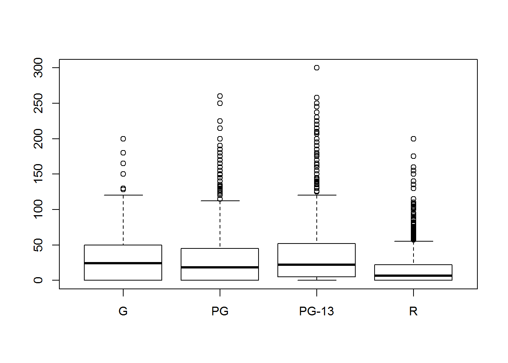
Q3
Use the mr4 dataset in R to create an appropriate graphic that shows the growth in budget in movies over time.
plot(budget~year, data=mr4)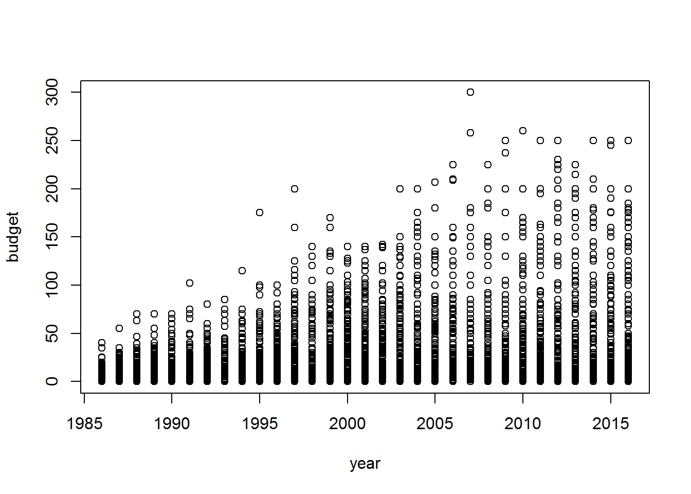
Week 2
Q1
Use the mr4 dataset in R to compute the mean IMDB score of the different MPAA ratings.
pander(mean(score~rating, data = mr4), caption = "Mean IMDB Score by Rating")| G | PG | PG-13 | R |
|---|---|---|---|
| 6.438 | 6.143 | 6.254 | 6.453 |
Q2
Use the mr4 dataset in R to make a graph that allows you to see how the budget is changes by year.
plot(budget~year, data = mr4)Q3
Run the following codes in R. Then select the statement that most appropriately interprets the resulting graph.
palette(c("blue","red","green","purple"))
plot(budget ~ year, data=mr4, col=as.factor(rating), pch=16, xlab="Year", ylab="Budget in Millions", main="Movies 1986 to 2016")
legend("topleft", pch=16, legend=c("G","PG","PG-13","R"), title="MPAA Rating", bty='n', col=palette())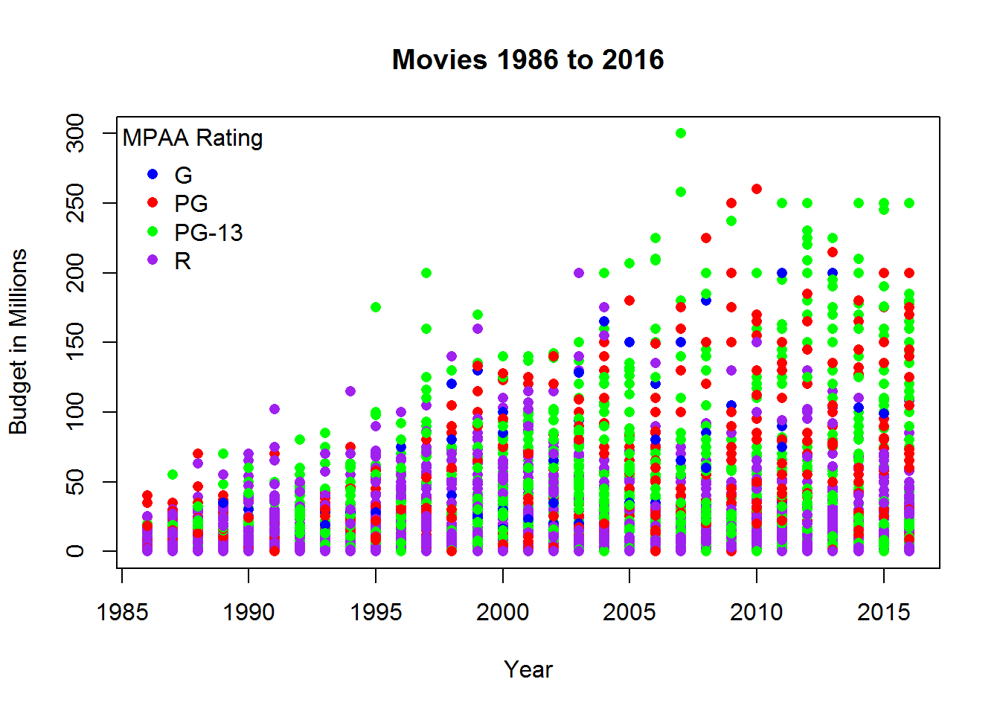
Week 3
Q1
Use appropriate R commands and the mr4 dataset to determine which movie rating occurred 55 times in 1990.
pander(table(mr4$rating, mr4$year == 1990))| FALSE | TRUE | |
|---|---|---|
| G | 141 | 6 |
| PG | 917 | 34 |
| PG-13 | 1940 | 55 |
| R | 3274 | 118 |
Q2
Use the mr4 dataset in RStudio to test the following hypotheses. \[ { H }_{ 0 }:{ \mu }_{\text{G Profit}}={ \mu }_{\text{R Profit}}\\ { H }_{ a }:{ \mu }_{\text{G Profit}}\neq{ \mu }_{\text{R Profit}} \]
pander(t.test(Profit2017~rating, data = subset(mr4, rating %in% c("G","R")), mu = 0, alternative = "two.sided", conf.level = 0.95))| Test statistic | df | P value | Alternative hypothesis |
|---|---|---|---|
| 4.585 | 148.9 | 9.567e-06 * * * | two.sided |
| mean in group G | mean in group R |
|---|---|
| 37.26 | 6.76 |
Q3
What two things are required to compute a p-value?
- A test statistic
- sampling distribution of the test statistic
Week 4
Q1
Use the mr4 dataset in R to find the number of R-rated movies from the UK in the dataset.
pander(table(mr4$rating, mr4$country %in% "UK"))| FALSE | TRUE | |
|---|---|---|
| G | 135 | 12 |
| PG | 864 | 87 |
| PG-13 | 1819 | 176 |
| R | 3006 | 386 |
Q2
Create an appropriate graphic using the mr4 dataset in R that would allow you to compare the distribution of Profit for Movies in each Rating.
boxplot(Profit2017 ~ rating, data=mr4, ylab="Profit in millions", xlab="Rating", main="Profit by Rating")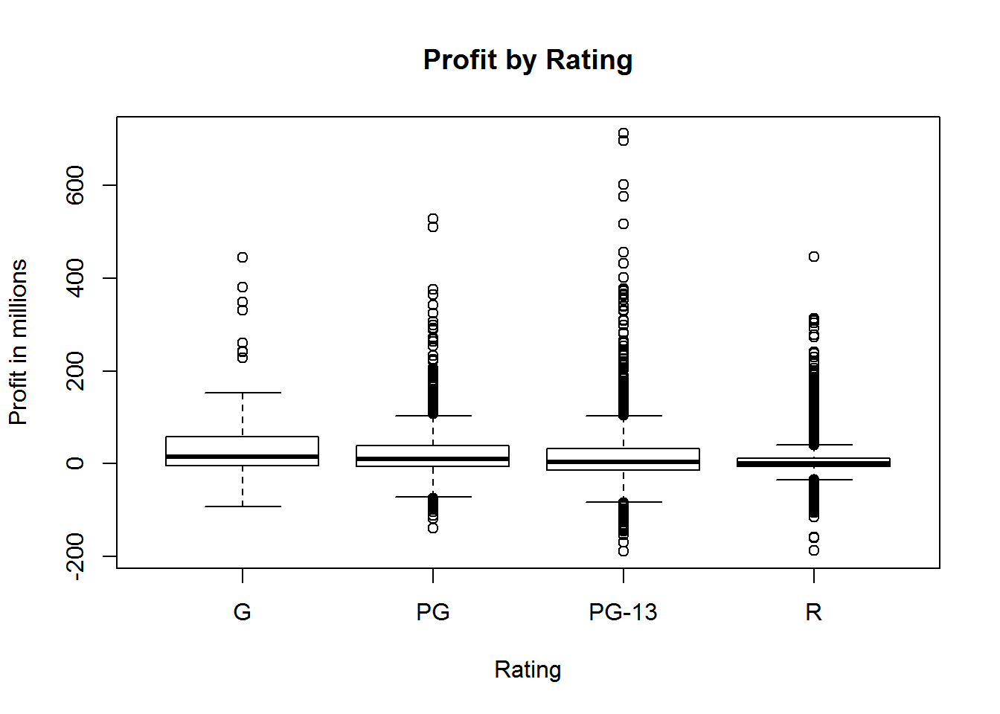
Q3
Perform an appropriate Wilcoxon Test of the following hypotheses using the mr4 dataset in R. \[ { H }_{ 0 }:\quad { { Median }_{ G Profit }=Median }_{ R Profit }\\ { H }_{ a }:\quad { { Median }_{ G Profit }\neq Median }_{ R Profit } \]
pander(wilcox.test(Profit2017 ~ rating, data=subset(mr4, rating %in% c("G","R"))))| Test statistic | P value | Alternative hypothesis |
|---|---|---|
| 317306 | 2.068e-08 * * * | two.sided |
Week 5
Q3
In the mr4 dataset, what is the average length of G-Rated Movies released in 1990?
pander(mean(runtime ~ rating, data=subset(mr4, year == "1990"), groups=year))| G.1990 | PG.1990 | PG-13.1990 | R.1990 | 1990 |
|---|---|---|---|---|
| 89.33 | 103.3 | 103.8 | 106 | 104.5 |
Week 6
pander(kruskal.test(salary~ rank, data=Salaries))| Test statistic | df | P value |
|---|---|---|
| 194 | 2 | 7.449e-43 * * * |
kruskal.test(salary~ rank, data=Salaries)##
## Kruskal-Wallis rank sum test
##
## data: salary by rank
## Kruskal-Wallis chi-squared = 194.01, df = 2, p-value < 2.2e-16boxplot(salary~ rank, data=Salaries)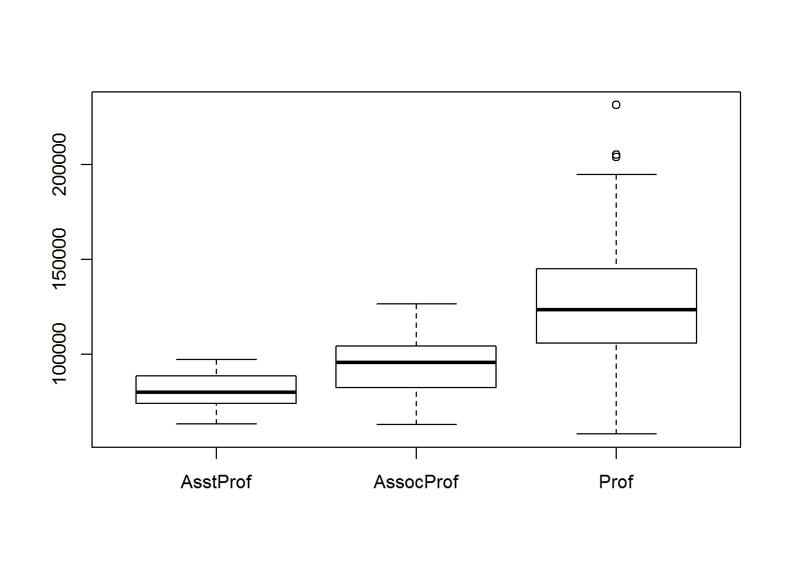
median(salary~ rank, data=Salaries)## AsstProf AssocProf Prof
## 79800.0 95626.5 123321.5Week 7
plot(Height ~ Volume, data=trees)
trees.lm <- lm(Height ~ Volume, data=trees)
abline(trees.lm)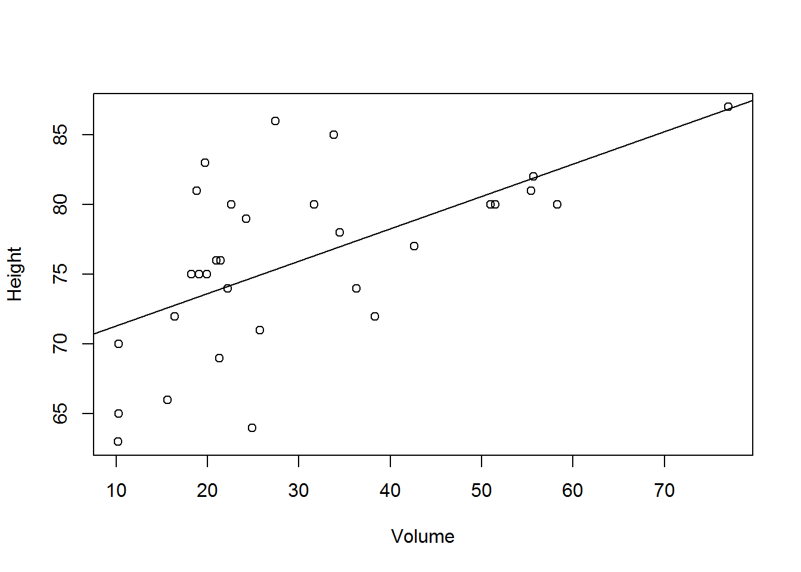
summary(trees.lm)##
## Call:
## lm(formula = Height ~ Volume, data = trees)
##
## Residuals:
## Min 1Q Median 3Q Max
## -10.7777 -2.9722 -0.1515 2.0804 10.6426
##
## Coefficients:
## Estimate Std. Error t value Pr(>|t|)
## (Intercept) 69.00336 1.97443 34.949 < 2e-16 ***
## Volume 0.23190 0.05768 4.021 0.000378 ***
## ---
## Signif. codes: 0 '***' 0.001 '**' 0.01 '*' 0.05 '.' 0.1 ' ' 1
##
## Residual standard error: 5.193 on 29 degrees of freedom
## Multiple R-squared: 0.3579, Adjusted R-squared: 0.3358
## F-statistic: 16.16 on 1 and 29 DF, p-value: 0.0003784trees.lm$coefficients## (Intercept) Volume
## 69.0033557 0.2318999par(mfrow=c(1,2))
plot(trees.lm, which=1:2)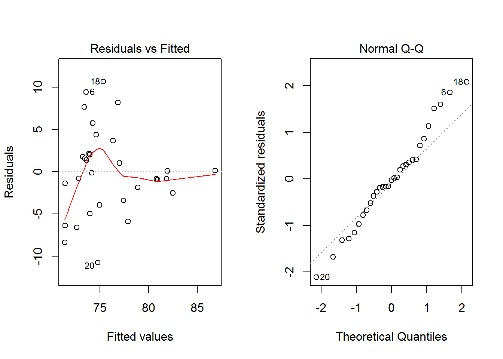
par(mfrow = c(1,1)) #This resets your plotting window for future plots.plot(waiting ~ eruptions, data=faithful)
of.lm <- lm(waiting ~ eruptions, data=faithful)
abline(of.lm)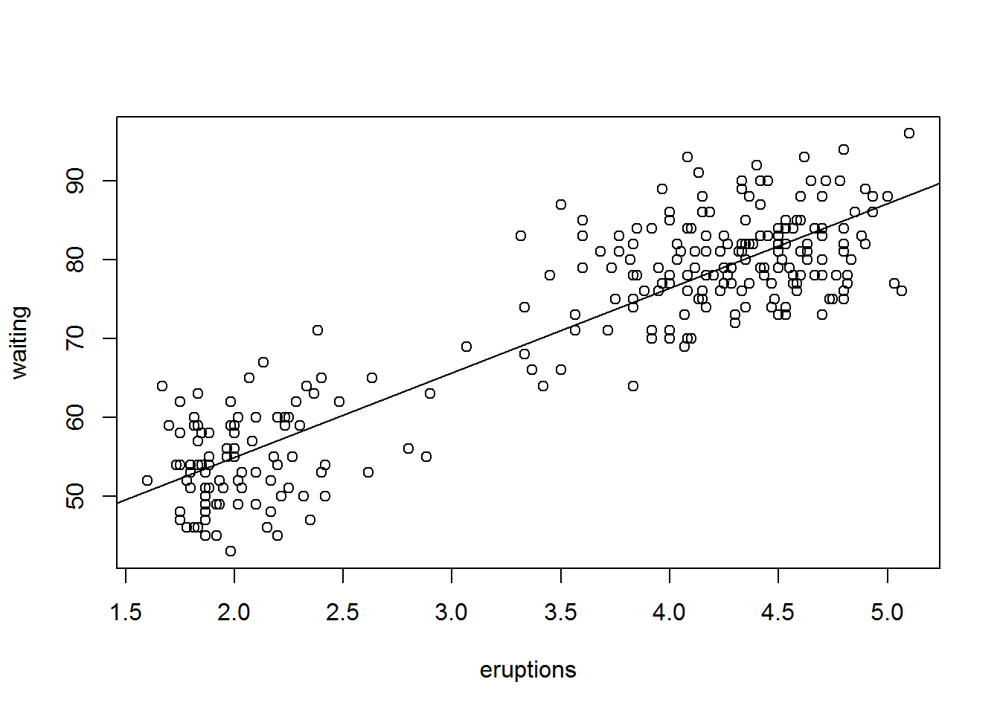
pander(summary(of.lm))| Estimate | Std. Error | t value | Pr(>|t|) | |
|---|---|---|---|---|
| (Intercept) | 33.47 | 1.155 | 28.99 | 7.136e-85 |
| eruptions | 10.73 | 0.3148 | 34.09 | 8.13e-100 |
| Observations | Residual Std. Error | \(R^2\) | Adjusted \(R^2\) |
|---|---|---|---|
| 272 | 5.914 | 0.8115 | 0.8108 |
par(mfrow=c(1,2))
plot(of.lm, which=1:2)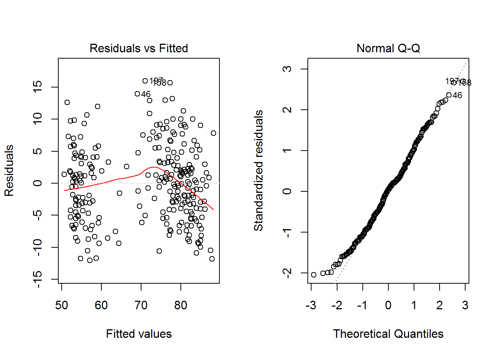
par(mfrow = c(1,1))
qqPlot(of.lm)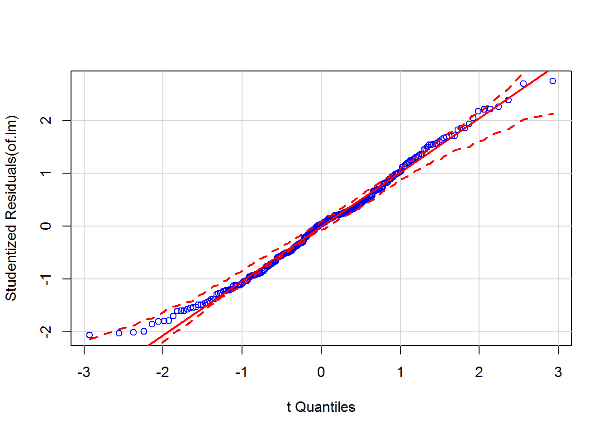
plot(length ~ width, data=KidsFeet)
of.lm <- lm(length ~ width, data=KidsFeet)
abline(of.lm)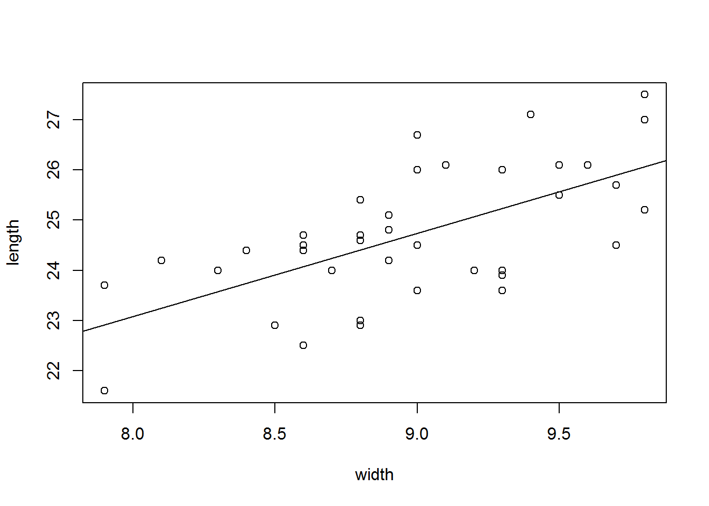
pander(summary(of.lm))| Estimate | Std. Error | t value | Pr(>|t|) | |
|---|---|---|---|---|
| (Intercept) | 9.817 | 2.938 | 3.341 | 0.001915 |
| width | 1.658 | 0.3262 | 5.081 | 1.097e-05 |
| Observations | Residual Std. Error | \(R^2\) | Adjusted \(R^2\) |
|---|---|---|---|
| 39 | 1.025 | 0.411 | 0.3951 |
par(mfrow=c(1,2))
plot(of.lm, which=1:2)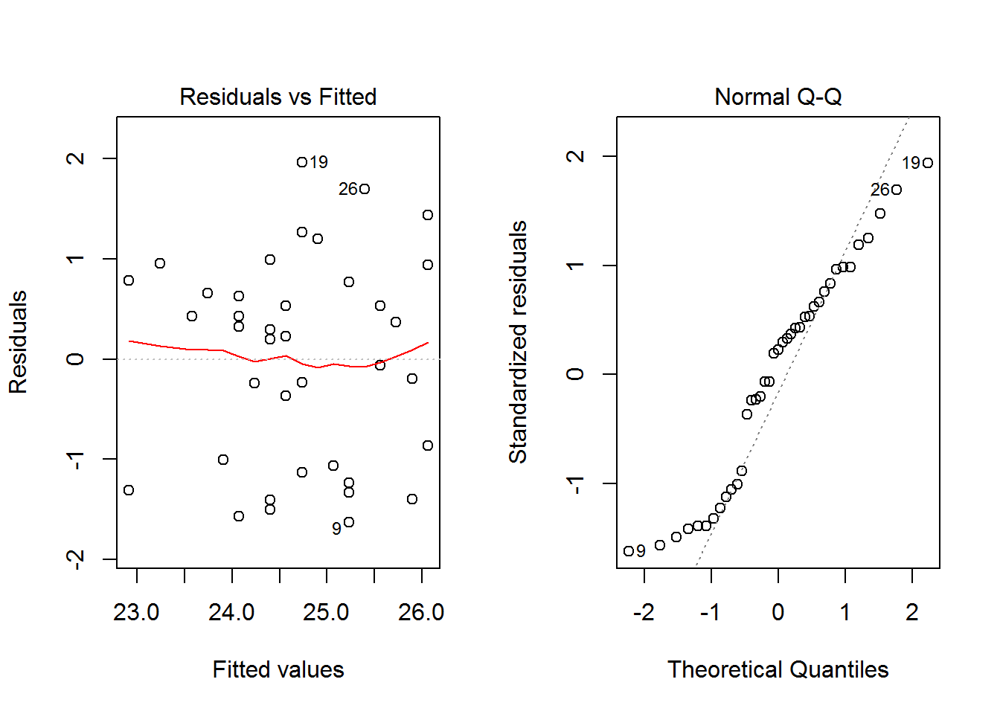
par(mfrow = c(1,1))
qqPlot(of.lm)
Week 8
#boxplot(length~sex,data=mtcars)
lmcars <- lm(mpg ~ qsec + am + qsec:am, data=mtcars)
lmcars##
## Call:
## lm(formula = mpg ~ qsec + am + qsec:am, data = mtcars)
##
## Coefficients:
## (Intercept) qsec am qsec:am
## -9.010 1.439 -14.511 1.321summary(lmcars)##
## Call:
## lm(formula = mpg ~ qsec + am + qsec:am, data = mtcars)
##
## Residuals:
## Min 1Q Median 3Q Max
## -6.4551 -1.4331 0.1918 2.2493 7.2773
##
## Coefficients:
## Estimate Std. Error t value Pr(>|t|)
## (Intercept) -9.0099 8.2179 -1.096 0.28226
## qsec 1.4385 0.4500 3.197 0.00343 **
## am -14.5107 12.4812 -1.163 0.25481
## qsec:am 1.3214 0.7017 1.883 0.07012 .
## ---
## Signif. codes: 0 '***' 0.001 '**' 0.01 '*' 0.05 '.' 0.1 ' ' 1
##
## Residual standard error: 3.343 on 28 degrees of freedom
## Multiple R-squared: 0.722, Adjusted R-squared: 0.6923
## F-statistic: 24.24 on 3 and 28 DF, p-value: 6.129e-08pander(lmcars)| Estimate | Std. Error | t value | Pr(>|t|) | |
|---|---|---|---|---|
| (Intercept) | -9.01 | 8.218 | -1.096 | 0.2823 |
| qsec | 1.439 | 0.45 | 3.197 | 0.003432 |
| am | -14.51 | 12.48 | -1.163 | 0.2548 |
| qsec:am | 1.321 | 0.7017 | 1.883 | 0.07012 |
par(mfrow=c(1,2))
plot(lmcars, which=1:2)
par(mfrow = c(1,1))
lmcars$coefficients## (Intercept) qsec am qsec:am
## -9.009861 1.438542 -14.510686 1.321415b<-lmcars$coefficients
palette(c("blue","red"))
plot(mpg ~ qsec,data=mtcars, col=as.factor(mtcars$am),pch=16)
abline(b[1], b[2], col="blue")
abline(b[1]+ b[3],b[2]+ b[4], col="red")
legend("topright",c("Automatic","Manual"), lty=1, lwd=5, col=palette(), cex=0.7, title="Transmission")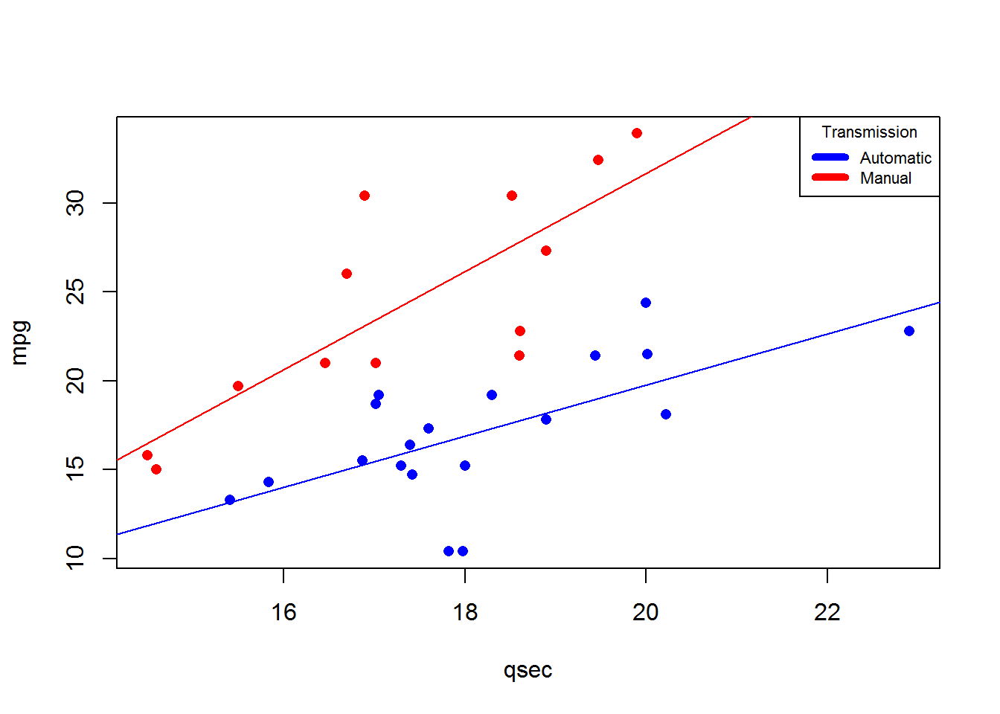
\[\underbrace{Y_i}_{mpg}=\beta_0+\beta_1\underbrace{X_{1i}}_{qsec}+\beta_2\underbrace{X_{2i}}_{am}+\beta_3\underbrace{X_{1i}X_{2i}}_{interaction}+\epsilon_i \]
\(\hat{ Y }_{ i }=\) -9.009861 + 1.4385416 \({ X }_{ 1i }+\) -14.5106855 \({ X }_{ 2i }+\) 1.3214154 \({ X }_{ 1i }{ X }_{ 2i }\)
week 10
plot(am~mpg,data=mtcars, pch=16)
MTC.glm <- glm(am>0 ~ mpg, data=mtcars, family=binomial)
summary(MTC.glm)##
## Call:
## glm(formula = am > 0 ~ mpg, family = binomial, data = mtcars)
##
## Deviance Residuals:
## Min 1Q Median 3Q Max
## -1.5701 -0.7531 -0.4245 0.5866 2.0617
##
## Coefficients:
## Estimate Std. Error z value Pr(>|z|)
## (Intercept) -6.6035 2.3514 -2.808 0.00498 **
## mpg 0.3070 0.1148 2.673 0.00751 **
## ---
## Signif. codes: 0 '***' 0.001 '**' 0.01 '*' 0.05 '.' 0.1 ' ' 1
##
## (Dispersion parameter for binomial family taken to be 1)
##
## Null deviance: 43.230 on 31 degrees of freedom
## Residual deviance: 29.675 on 30 degrees of freedom
## AIC: 33.675
##
## Number of Fisher Scoring iterations: 5b<-MTC.glm$coefficients
curve(exp(b[1]+b[2]*x)/(1+exp(b[1]+b[2]*x)), from=8, to=40, add=TRUE)
pc<-predict(MTC.glm, data.frame(mpg=31), type='response')
curve(exp(b[1]+b[2]*x)/(1+exp(b[1]+b[2]*x)), from=-1, to=40, add=TRUE, col="red")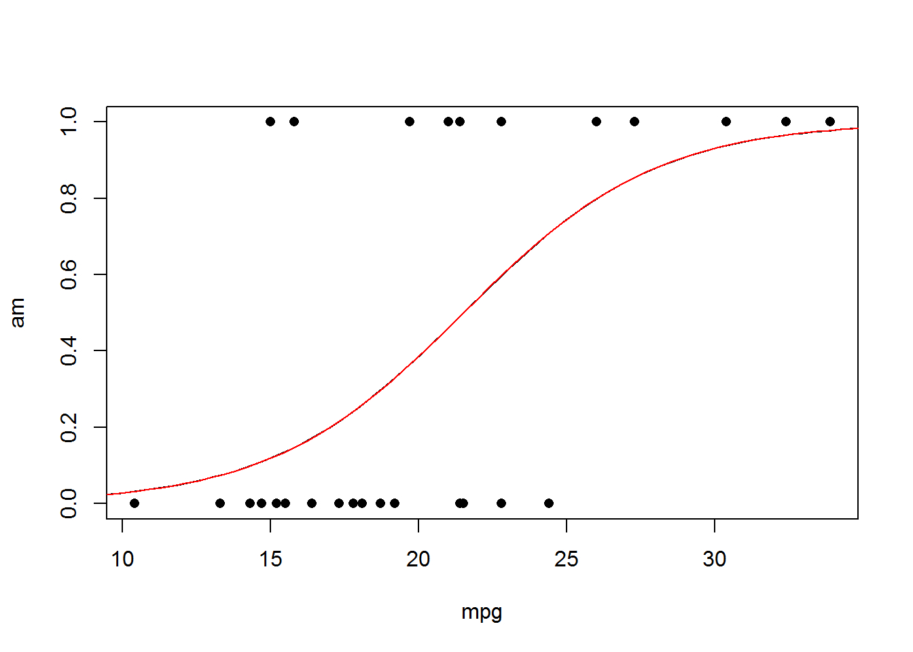 The probability that a car has an manual transmission given that it gets 31 mpg is 0.9485511
\[ P(Y_i=1|x_i)={e^{\beta_0+\beta_1x_i}}\frac{a} \] The odds that a car has a manual transmission increases 36% for every mpg increase. \(e^{\beta_1}\)
Challenger
library(alr3)## Warning: package 'alr3' was built under R version 3.4.3\[ P(Y_i = 1|x_i) = \frac{e^{\beta_0+\beta_1 x_i}}{1+e^{\beta_0 + \beta_1 x_i}} = \pi_i \]
library(alr3)
chall.glm <- glm(Fail>0 ~ Temp, data=challeng, family=binomial)
summary(chall.glm)##
## Call:
## glm(formula = Fail > 0 ~ Temp, family = binomial, data = challeng)
##
## Deviance Residuals:
## Min 1Q Median 3Q Max
## -1.0611 -0.7613 -0.3783 0.4524 2.2175
##
## Coefficients:
## Estimate Std. Error z value Pr(>|z|)
## (Intercept) 15.0429 7.3786 2.039 0.0415 *
## Temp -0.2322 0.1082 -2.145 0.0320 *
## ---
## Signif. codes: 0 '***' 0.001 '**' 0.01 '*' 0.05 '.' 0.1 ' ' 1
##
## (Dispersion parameter for binomial family taken to be 1)
##
## Null deviance: 28.267 on 22 degrees of freedom
## Residual deviance: 20.315 on 21 degrees of freedom
## AIC: 24.315
##
## Number of Fisher Scoring iterations: 5b<-chall.glm$coefficients
plot( Fail>0 ~ Temp, data=challeng, main="", ylab='Probability of O-rings Failing', pch=16)
curve(exp(b[1]+b[2]*x)/(1+exp(b[1]+b[2]*x)), add=TRUE)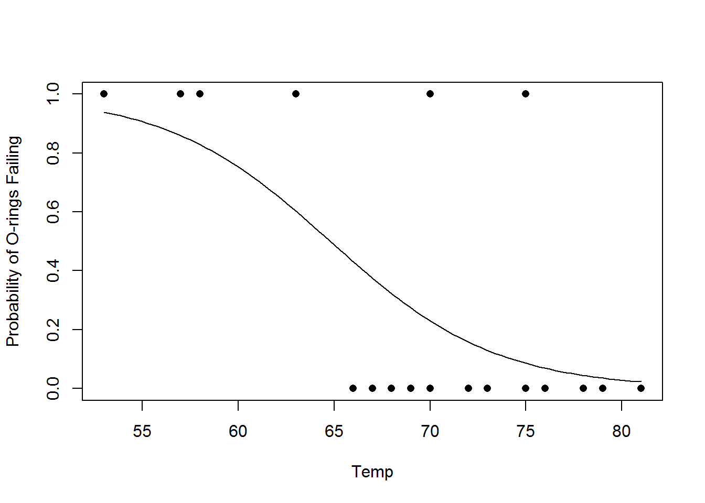
library(ResourceSelection)hoslem.test(chall.glm$y, chall.glm$fitted, g=6)##
## Hosmer and Lemeshow goodness of fit (GOF) test
##
## data: chall.glm$y, chall.glm$fitted
## X-squared = 7.4118, df = 4, p-value = 0.1157# Note: doesn't give a p-value for g >= 7, default is g=10.
# Larger g is usually better than smaller g.infert.glm <- glm( (spontaneous > 0) ~ age, data=infert, family=binomial)
b<-summary(infert.glm)$coefficients
plot( (spontaneous > 0) ~ age, data=infert)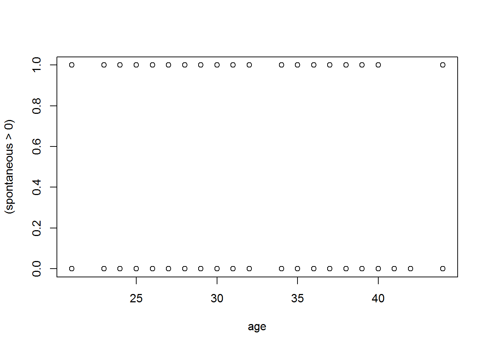
table(infert$age)##
## 21 23 24 25 26 27 28 29 30 31 32 34 35 36 37 38 39 40 41 42 44
## 6 6 3 15 15 15 30 12 12 21 15 18 18 15 12 8 9 6 3 6 3pchisq(334.01, 246, lower.tail=FALSE)## [1] 0.0001571274HG<-Galton
HG$bs<-as.integer(Galton$sex)-1
HG$bs<-as.integer(HG$bs)
h.glm <- glm(bs ~ height, data=HG, family=binomial)
summary(h.glm)##
## Call:
## glm(formula = bs ~ height, family = binomial, data = HG)
##
## Deviance Residuals:
## Min 1Q Median 3Q Max
## -2.5425 -0.5068 0.0789 0.5046 3.2188
##
## Coefficients:
## Estimate Std. Error z value Pr(>|z|)
## (Intercept) -52.98422 3.40240 -15.57 <2e-16 ***
## height 0.79683 0.05117 15.57 <2e-16 ***
## ---
## Signif. codes: 0 '***' 0.001 '**' 0.01 '*' 0.05 '.' 0.1 ' ' 1
##
## (Dispersion parameter for binomial family taken to be 1)
##
## Null deviance: 1243.75 on 897 degrees of freedom
## Residual deviance: 626.22 on 896 degrees of freedom
## AIC: 630.22
##
## Number of Fisher Scoring iterations: 6b<-h.glm$coefficients
plot(bs~ height, data=HG)
curve(exp(b[1]+b[2]*x)/(1+exp(b[1]+b[2]*x)), add=TRUE)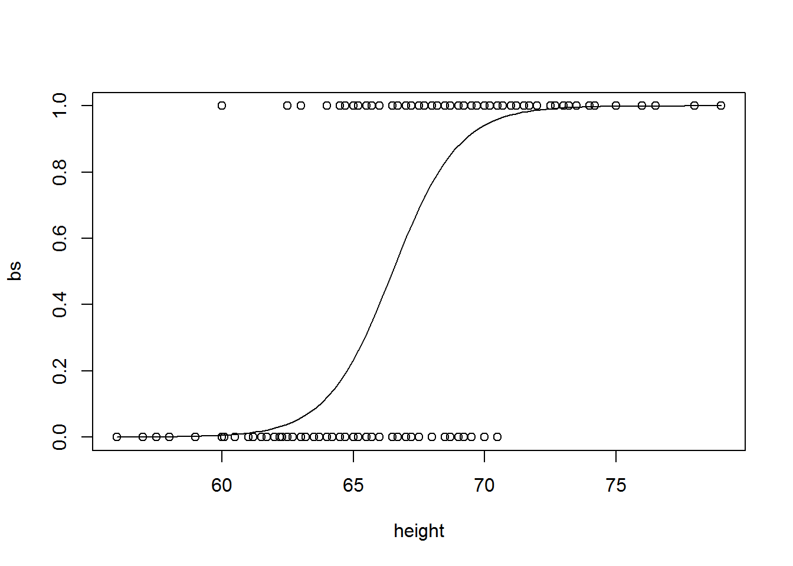
pm<-predict(h.glm, data.frame(height=65), type='response')library(ResourceSelection)
hoslem.test(h.glm$y, h.glm$fitted, g=10)##
## Hosmer and Lemeshow goodness of fit (GOF) test
##
## data: h.glm$y, h.glm$fitted
## X-squared = 1.6661, df = 8, p-value = 0.9896# Note: doesn't give a p-value for g >= 7, default is g=10.
# Larger g is usually better than smaller g.Week 11
library(robustbase)## Warning: package 'robustbase' was built under R version 3.4.4##
## Attaching package: 'robustbase'## The following object is masked from 'package:alr3':
##
## cloudFSP.glm <- glm(participation ~ income + tenancy , data=foodstamp, family=binomial)
pander(summary(FSP.glm))| Estimate | Std. Error | z value | Pr(>|z|) | |
|---|---|---|---|---|
| (Intercept) | 0.07173 | 0.4671 | 0.1536 | 0.878 |
| income | -0.001693 | 0.0009464 | -1.789 | 0.07358 |
| tenancy | -1.843 | 0.5225 | -3.527 | 0.0004205 |
(Dispersion parameter for binomial family taken to be 1 )
| Null deviance: | 131.9 on 149 degrees of freedom |
| Residual deviance: | 106.6 on 147 degrees of freedom |
b<-FSP.glm$coefficients
pvLR<-coef(summary(FSP.glm))[2,4]
pander(hoslem.test(FSP.glm$y, FSP.glm$fitted))| Test statistic | df | P value |
|---|---|---|
| 11.97 | 8 | 0.1527 |
hlpv<-hoslem.test(FSP.glm$y, FSP.glm$fitted)$p.value
plot(participation ~ income, data=foodstamp, pch=16, cex=0.5, xlim=c(0,5000), xlab= "income", ylab="Food Stamp Program")
curve(exp(b[1] + b[2]*x)/(1+exp(b[1] + b[2]*x)),from=0, to=5000, add=TRUE, col='Blue')
curve(exp(b[1]+b[3] + (b[2])*x)/(1+exp(b[1]+b[3] + (b[2])*x)),from=0, to=5000, add=TRUE, col='red')
legend("right", legend=c("Not Own Home", "Own Home"), col=c("Blue","red"), lty=1)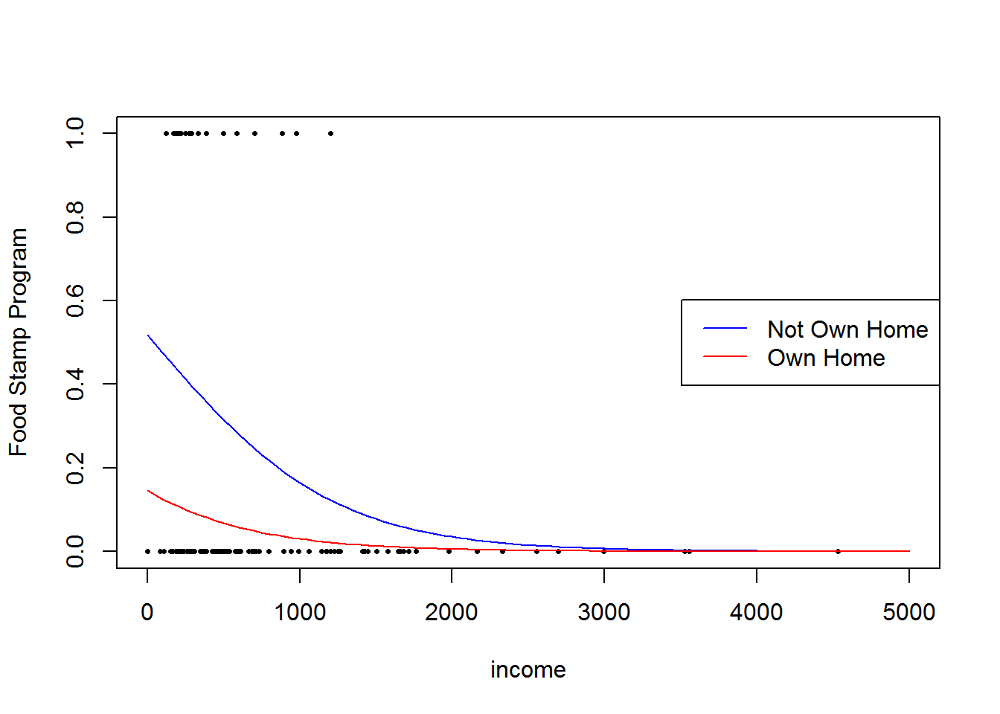
table(foodstamp$income, foodstamp$tenancy)##
## 0 1
## 0 1 0
## 84 0 1
## 107 0 1
## 125 1 0
## 150 1 0
## 167 0 1
## 168 0 1
## 169 1 0
## 176 1 0
## 177 1 0
## 184 1 0
## 187 0 1
## 188 0 1
## 196 1 1
## 197 1 1
## 198 1 0
## 200 1 0
## 201 1 0
## 203 1 0
## 205 1 0
## 211 0 1
## 212 0 1
## 214 1 0
## 220 0 1
## 221 1 0
## 230 0 1
## 233 0 2
## 235 0 2
## 242 1 0
## 248 1 0
## 250 0 1
## 260 0 2
## 264 1 0
## 266 1 0
## 271 0 1
## 273 0 2
## 274 1 0
## 285 1 1
## 286 1 0
## 287 0 1
## 291 0 1
## 295 0 1
## 296 0 1
## 307 0 1
## 334 1 0
## 346 0 1
## 350 1 0
## 354 0 1
## 356 1 0
## 372 1 0
## 373 0 1
## 379 0 1
## 385 0 1
## 386 1 0
## 426 0 1
## 429 0 1
## 430 1 0
## 435 0 1
## 440 0 1
## 443 1 0
## 444 0 1
## 449 0 1
## 450 1 0
## 452 1 0
## 453 1 0
## 458 0 1
## 459 0 1
## 460 0 1
## 462 1 0
## 465 0 1
## 471 0 1
## 476 0 2
## 477 0 2
## 482 0 1
## 489 0 1
## 495 0 1
## 499 0 1
## 500 0 1
## 512 1 0
## 517 0 1
## 518 0 1
## 519 0 1
## 520 1 0
## 521 0 1
## 523 0 1
## 534 1 0
## 540 1 0
## 575 1 0
## 580 0 1
## 581 1 0
## 586 1 0
## 589 0 1
## 596 0 1
## 607 0 1
## 611 1 0
## 613 1 0
## 664 0 1
## 683 0 1
## 685 1 0
## 697 0 1
## 704 1 0
## 714 0 1
## 735 1 0
## 797 0 1
## 885 1 0
## 893 2 0
## 943 0 1
## 977 1 0
## 992 0 1
## 1061 0 1
## 1143 0 1
## 1170 0 2
## 1179 0 1
## 1200 0 1
## 1202 0 1
## 1228 0 1
## 1251 0 1
## 1266 0 1
## 1410 0 1
## 1427 1 0
## 1445 0 2
## 1504 0 1
## 1578 0 1
## 1644 0 1
## 1653 0 1
## 1661 0 1
## 1680 0 1
## 1715 0 1
## 1765 0 1
## 1980 0 1
## 2165 0 1
## 2331 0 1
## 2556 0 1
## 2697 0 1
## 2995 0 1
## 3525 0 1
## 3556 0 1
## 4533 0 1pander(hoslem.test(FSP.glm$y, FSP.glm$fitted))| Test statistic | df | P value |
|---|---|---|
| 11.97 | 8 | 0.1527 |
summary(FSP.glm)##
## Call:
## glm(formula = participation ~ income + tenancy, family = binomial,
## data = foodstamp)
##
## Deviance Residuals:
## Min 1Q Median 3Q Max
## -1.2080 -0.4799 -0.3826 -0.1438 2.7659
##
## Coefficients:
## Estimate Std. Error z value Pr(>|z|)
## (Intercept) 0.0717322 0.4671385 0.154 0.87796
## income -0.0016933 0.0009464 -1.789 0.07358 .
## tenancy -1.8427382 0.5224821 -3.527 0.00042 ***
## ---
## Signif. codes: 0 '***' 0.001 '**' 0.01 '*' 0.05 '.' 0.1 ' ' 1
##
## (Dispersion parameter for binomial family taken to be 1)
##
## Null deviance: 131.90 on 149 degrees of freedom
## Residual deviance: 106.65 on 147 degrees of freedom
## AIC: 112.65
##
## Number of Fisher Scoring iterations: 6pchisq(131.90, 149, lower.tail = FALSE)## [1] 0.8394538pchisq(106.90, 147, lower.tail = FALSE)## [1] 0.9946667pchisq(131.90-106.65, 2, lower.tail = FALSE)## [1] 3.28876e-06The odds of participating in food stamps if you own a home is 0.1583831 of the odds of participating in food stamps if you do not own a home. This makes it 6.313803 times more likely to participate in food stamps if you do not own a home even if you have the same income.
Week 12
apply(Titanic, c(4), sum)## No Yes
## 1490 711Never look at the gospel throught the lens of your discipline; always view your discipline through the lens of the gospel.
glasses <- cbind( Males = c(Glasses = 5, Contacts = 12, None = 18), Females = c(Glasses = 4, Contacts = 14, None = 22))
barplot(glasses, beside=TRUE, legend.text=TRUE, args.legend=list(x = "topleft", bty="n"))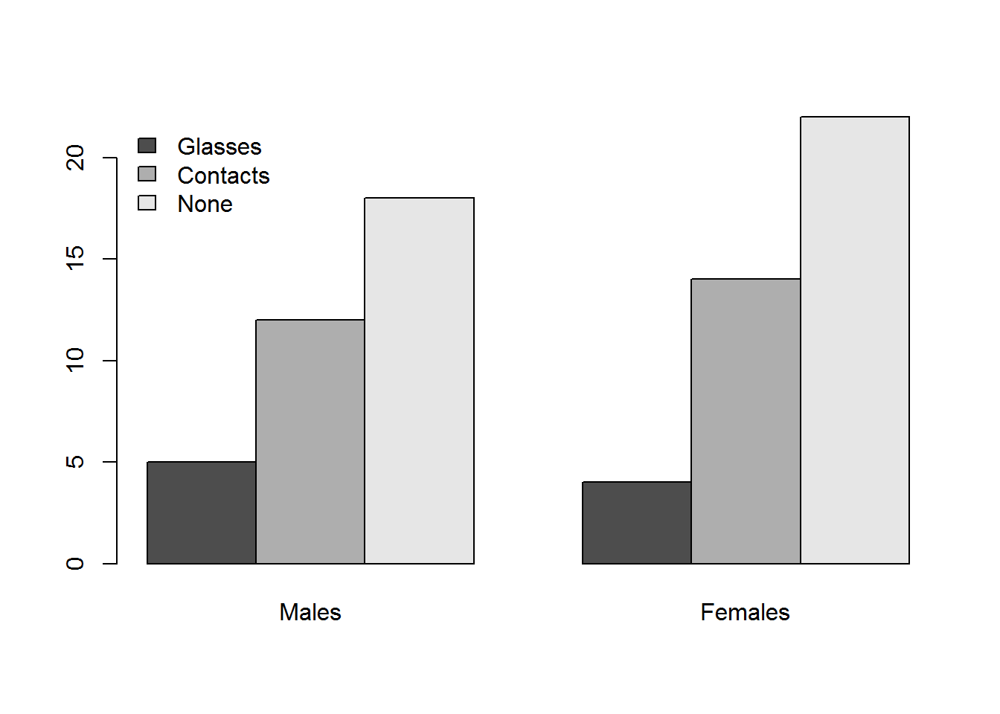
chis.glasses <- chisq.test(glasses)## Warning in chisq.test(glasses): Chi-squared approximation may be incorrectchis.glasses$expected ## Males Females
## Glasses 4.20000 4.80000
## Contacts 12.13333 13.86667
## None 18.66667 21.33333chis.glasses##
## Pearson's Chi-squared test
##
## data: glasses
## X-squared = 0.3331, df = 2, p-value = 0.8466chis.glasses$residuals## Males Females
## Glasses 0.39036003 -0.36514837
## Contacts -0.03827795 0.03580574
## None -0.15430335 0.14433757barplot(chis.glasses$residuals, beside=TRUE, legend.text=TRUE, args.legend=list(x = "topleft", bty="n"))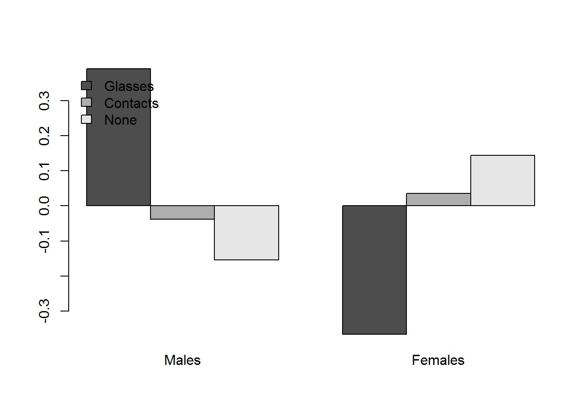
education <- cbind( `United States` = c(Engineering = 61941, `Natural Science` = 111158, `Social Science` = 182166), `Western Europe` = c(Engineering = 158931, `Natural Science` = 140126, `Social Science` = 116353), Asia = c(280772, 242879, 236018))
barplot(education, beside=TRUE, legend.text=TRUE, args.legend=list(x = "topleft", bty="n"))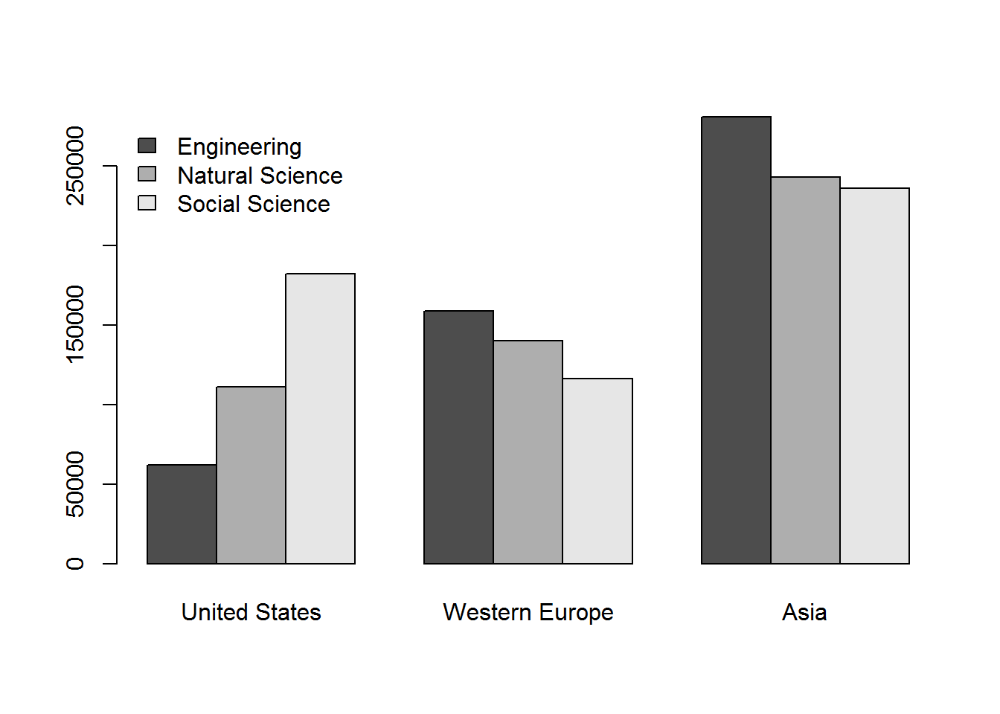
chisq.ed <- chisq.test(education)
chisq.ed$expected ## United States Western Europe Asia
## Engineering 116455.2 136170.6 249018.1
## Natural Science 114718.5 134139.9 245304.5
## Social Science 124091.2 145099.4 265346.3chisq.ed##
## Pearson's Chi-squared test
##
## data: education
## X-squared = 69890, df = 4, p-value < 2.2e-16chisq.ed$residuals## United States Western Europe Asia
## Engineering -159.74613 61.67899 63.632829
## Natural Science -10.51231 16.34414 -4.897263
## Social Science 164.86059 -75.46591 -56.935221barplot(chis.glasses$residuals, beside=TRUE, legend.text=TRUE, args.legend=list(x = "topleft", bty="n"))
tmp <- aov(count ~ spray, data=InsectSprays)
par(mfrow=c(1,2))
plot(tmp, which=1:2, pch=16)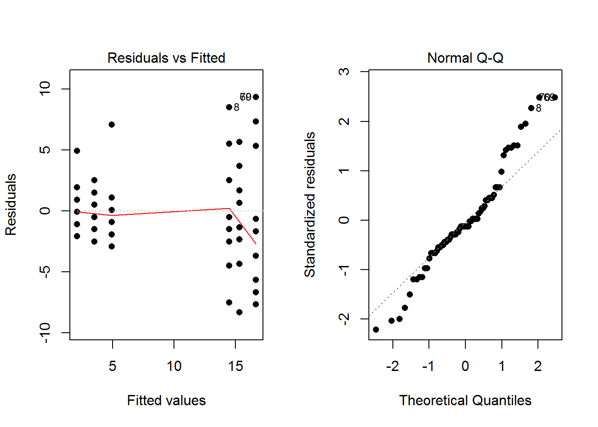
summary(tmp)## Df Sum Sq Mean Sq F value Pr(>F)
## spray 5 2669 533.8 34.7 <2e-16 ***
## Residuals 66 1015 15.4
## ---
## Signif. codes: 0 '***' 0.001 '**' 0.01 '*' 0.05 '.' 0.1 ' ' 1education <- cbind( `United States` = c(Engineering = 61941, `Natural Science` = 111158, `Social Science` = 182166), `Western Europe` = c(Engineering = 158931, `Natural Science` = 140126, `Social Science` = 116353), Asia = c(280772, 242879, 236018))
barplot(education, beside=TRUE, legend.text=TRUE, args.legend=list(x = "topleft", bty="n"))
chisq.ed <- chisq.test(education)
chisq.ed$expected ## United States Western Europe Asia
## Engineering 116455.2 136170.6 249018.1
## Natural Science 114718.5 134139.9 245304.5
## Social Science 124091.2 145099.4 265346.3chisq.ed##
## Pearson's Chi-squared test
##
## data: education
## X-squared = 69890, df = 4, p-value < 2.2e-16chisq.ed$residuals## United States Western Europe Asia
## Engineering -159.74613 61.67899 63.632829
## Natural Science -10.51231 16.34414 -4.897263
## Social Science 164.86059 -75.46591 -56.935221barplot(chis.glasses$residuals, beside=TRUE, legend.text=TRUE, args.legend=list(x = "topleft", bty="n"))Week 13
set.seed(121)
sample1 <- rnorm(30, 185, 8)
sample2 <- sample1 - rnorm(30, 0, 3.5)
theData <- data.frame(values = c(sample1,sample2), group = rep(c(1,2), each=30), id = rep(c(1:30),times=2))
#View(theData)
with(theData, hist(values[group==1] - values[group==2]))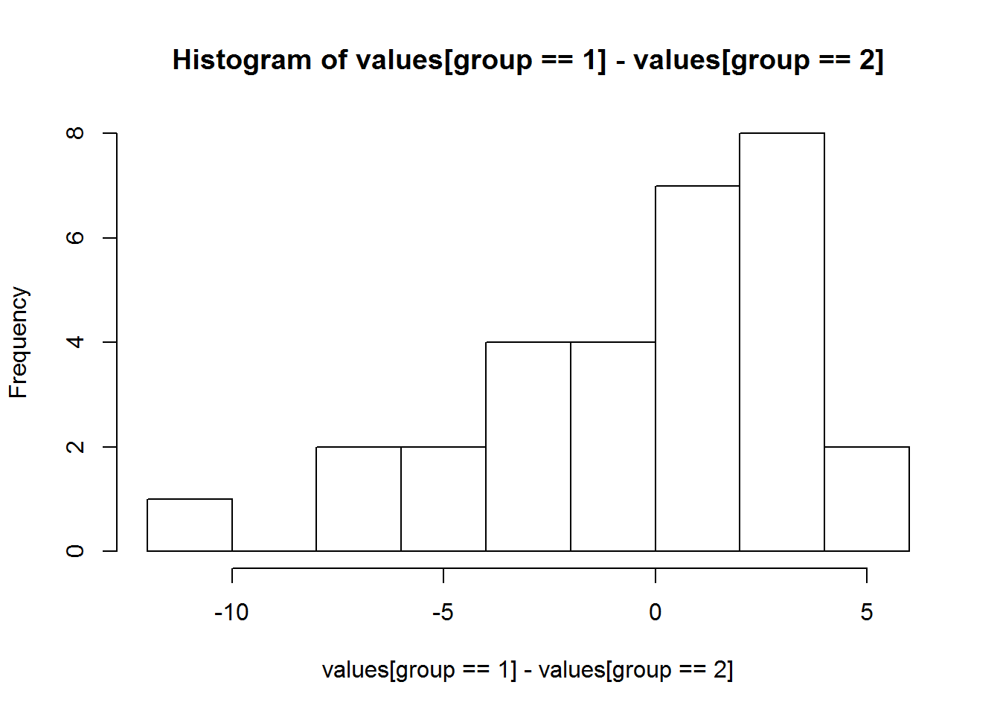
myTest <- t.test(values~group,data=theData,paired=TRUE, mu=0)
observedTestStat <- myTest$statistic
N <- 2000
permutedTestStats <- rep(NA, N)
for (i in 1:N ) {
permutedData <- sample(x=c(1,-1),size = 30, replace = TRUE)
permutedTest <- with(theData, t.test(permutedData*(values[group==1]-values[group==2]),mu=0))
permutedTestStats[i] <- permutedTest$statistic
}
hist(permutedTestStats)
abline(v=observedTestStat)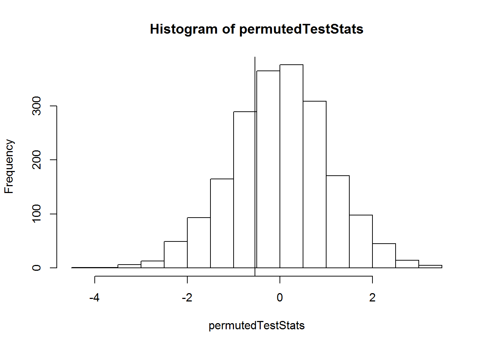
sum(permutedTestStats >= observedTestStat)/N## [1] 0.7035sum(permutedTestStats <= observedTestStat)/N## [1] 0.2965set.seed(1140411)
sample1 <- rnorm(30, 69, 2.5)
sample2 <- rnorm(30, 69, 2.5)
theData <- data.frame(values = c(sample1,sample2), group = rep(c(1,2), each=30))
boxplot(values ~ group, data = theData)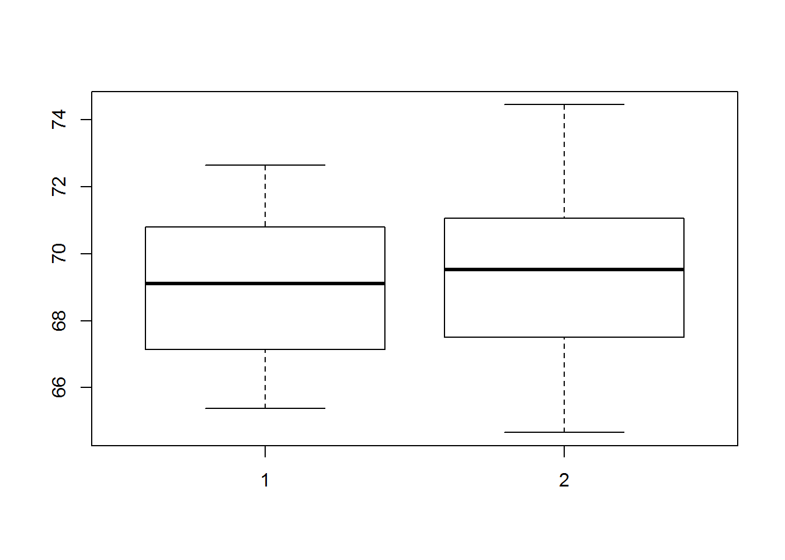
myTest <- t.test(values~group,data = theData, mu=0)
observedTestStat <- myTest$statistic
N <- 2000
permutedTestStats <- rep(NA, N)
for (i in 1:N ) {
permutedData <- sample(x=theData$group)
permutedTest <- t.test(values~permutedData, data = theData, mu=0)
permutedTestStats[i] <- permutedTest$statistic
}
hist(permutedTestStats)
abline(v=observedTestStat)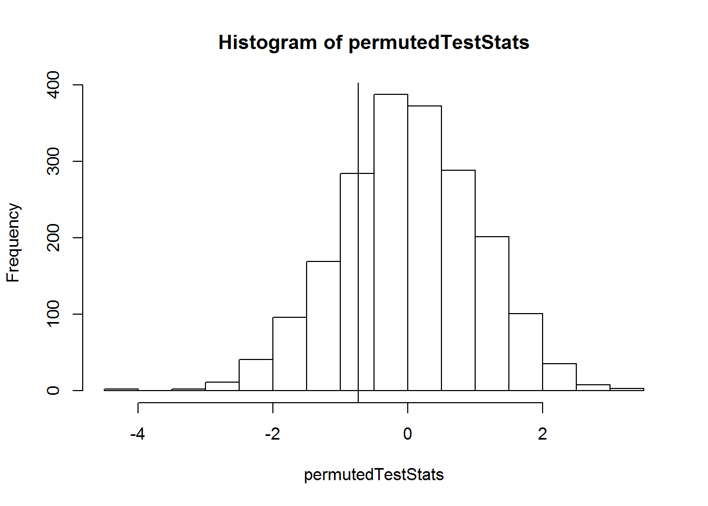
sum(permutedTestStats >= observedTestStat)/N## [1] 0.766sum(permutedTestStats <= observedTestStat)/N## [1] 0.234table(SaratogaHouses$fuel)##
## gas electric oil
## 1197 315 216pander(kruskal.test(price~ fuel, data=SaratogaHouses))| Test statistic | df | P value |
|---|---|---|
| 159.7 | 2 | 2.136e-35 * * * |
kruskal.test(price~ fuel, data=SaratogaHouses)##
## Kruskal-Wallis rank sum test
##
## data: price by fuel
## Kruskal-Wallis chi-squared = 159.66, df = 2, p-value < 2.2e-16boxplot(price~ fuel, data=SaratogaHouses)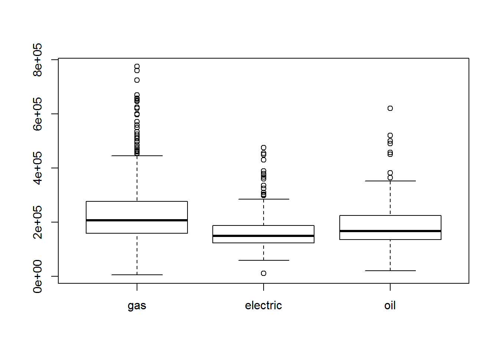
median(price~ fuel, data=SaratogaHouses)## gas electric oil
## 206500 149300 167500#stripchart(price ~ fuel, data=SaratogaHouses)Final
Q1
lmll<-lm(height ~ age, data=Loblolly)
plot(height ~ age, data=Loblolly)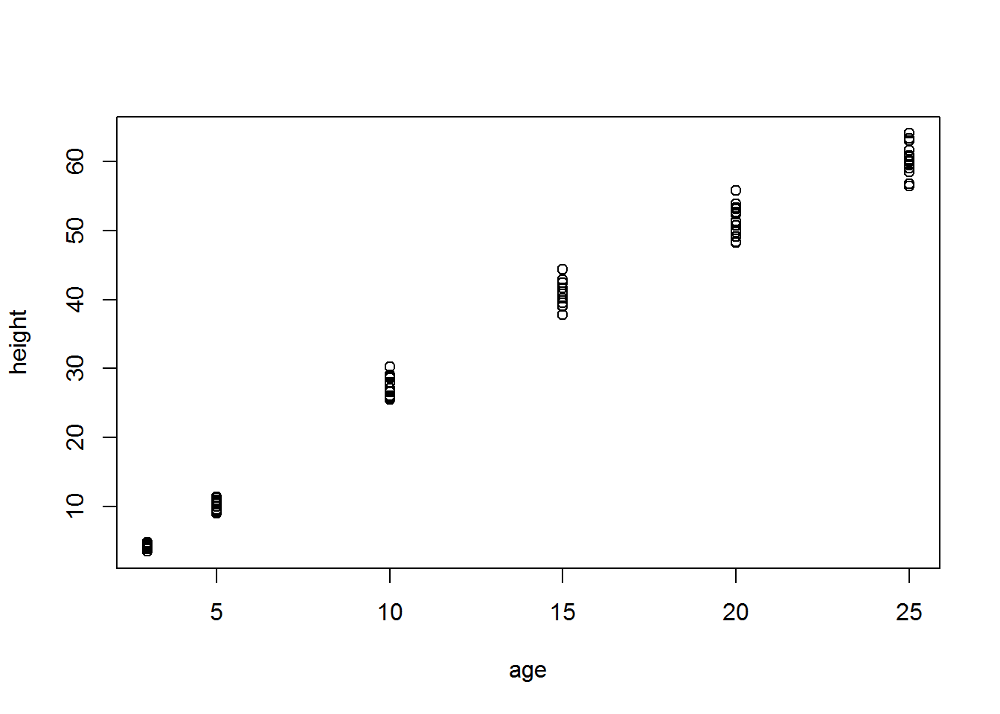
xyplot(height ~ age, data=Loblolly, type=c("p","a"), main="Significance of Treatment", col='blue') 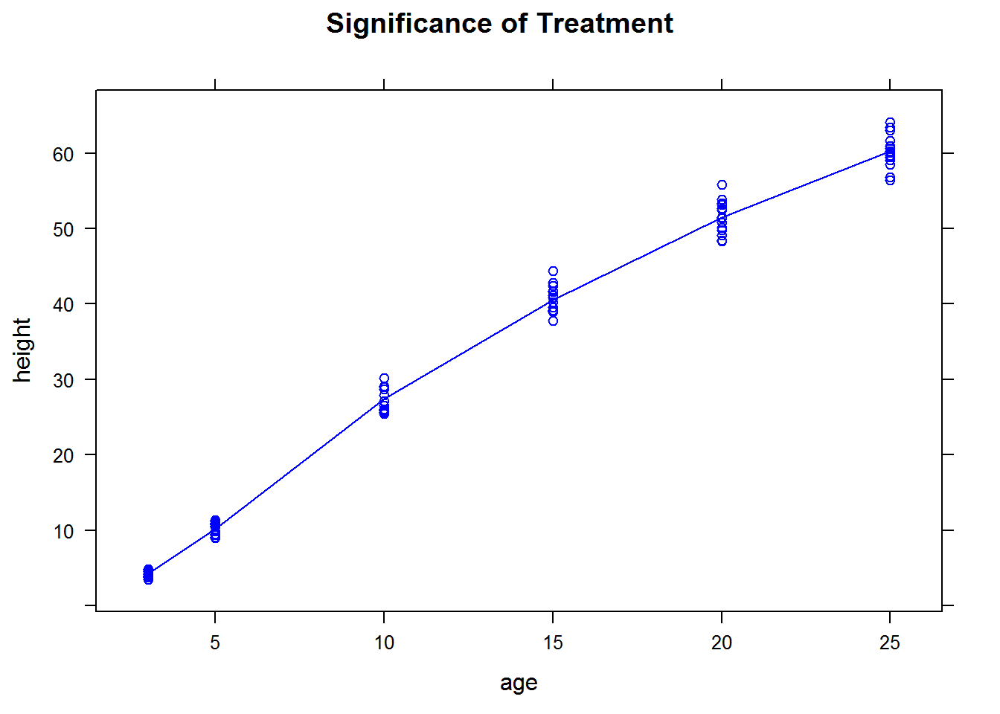
par(mfrow=c(1,2))
plot(lmcars, which=1:2)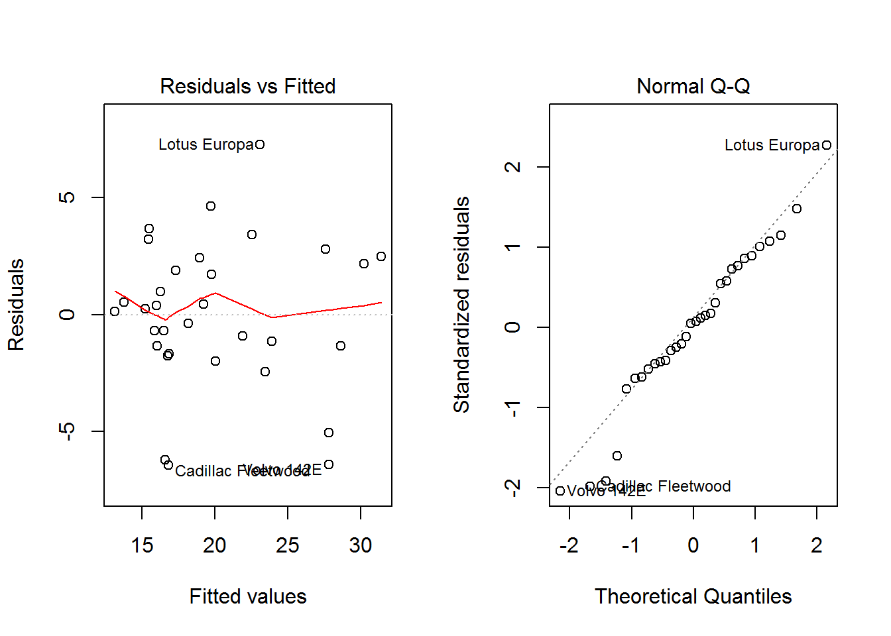
par(mfrow = c(1,1))Q2
str(Highway1)## 'data.frame': 39 obs. of 12 variables:
## $ rate : num 4.58 2.86 3.02 2.29 1.61 6.87 3.85 6.12 3.29 5.88 ...
## $ len : num 4.99 16.11 9.75 10.65 20.01 ...
## $ adt : int 69 73 49 61 28 30 46 25 43 23 ...
## $ trks : int 8 8 10 13 12 6 8 9 12 7 ...
## $ sigs1: num 0.2004 0.0621 0.1026 0.0939 0.05 ...
## $ slim : int 55 60 60 65 70 55 55 55 50 50 ...
## $ shld : int 10 10 10 10 10 10 8 10 4 5 ...
## $ lane : int 8 4 4 6 4 4 4 4 4 4 ...
## $ acpt : num 4.6 4.4 4.7 3.8 2.2 24.8 11 18.5 7.5 8.2 ...
## $ itg : num 1.2 1.43 1.54 0.94 0.65 0.34 0.47 0.38 0.95 0.12 ...
## $ lwid : int 12 12 12 12 12 12 12 12 12 12 ...
## $ htype: Factor w/ 4 levels "FAI","MA","MC",..: 1 1 1 1 1 4 4 4 4 4 ...plot(rate ~ slim, data=Highway1, pch=16, xlab="", ylab="", main="")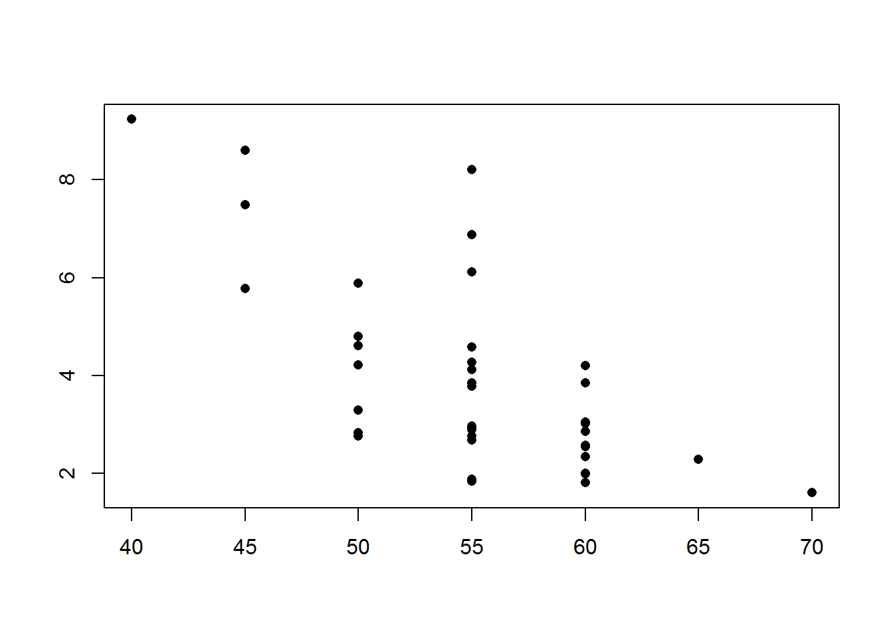
plot(rate ~ slim, data=Highway1, pch=16, xlab="Speed Limit", ylab="Accident Rate", main="1973 Minnesota Highway Safety Study")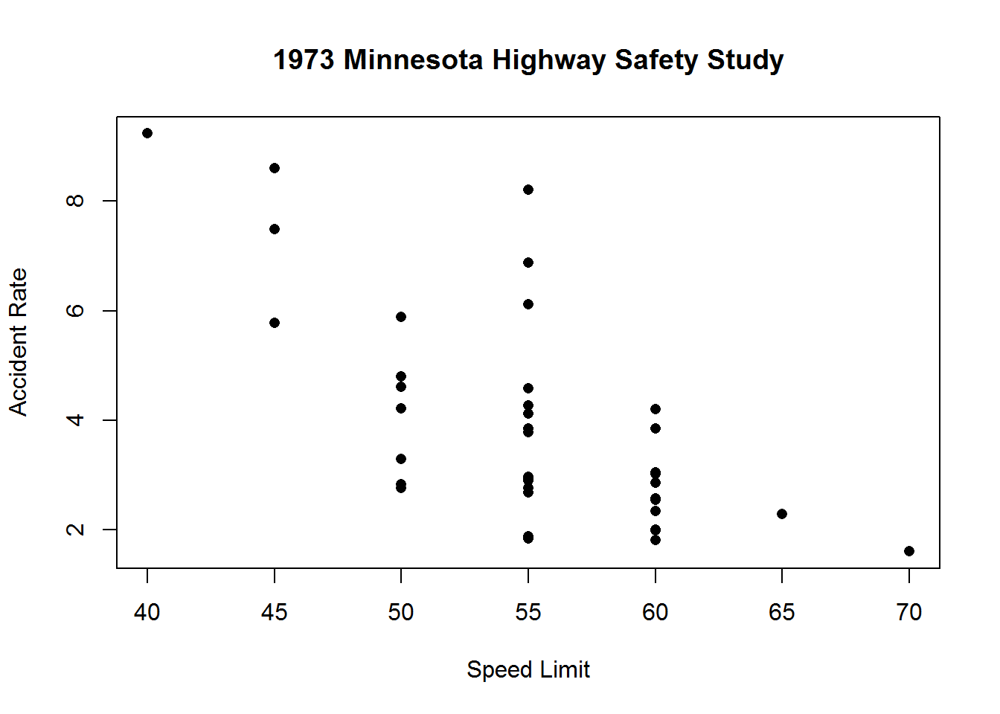
Q3
hist(islands, breaks=50 ,xlab="Area in Thousands of Square Miles", main="Areas of the World's Major Landmasses")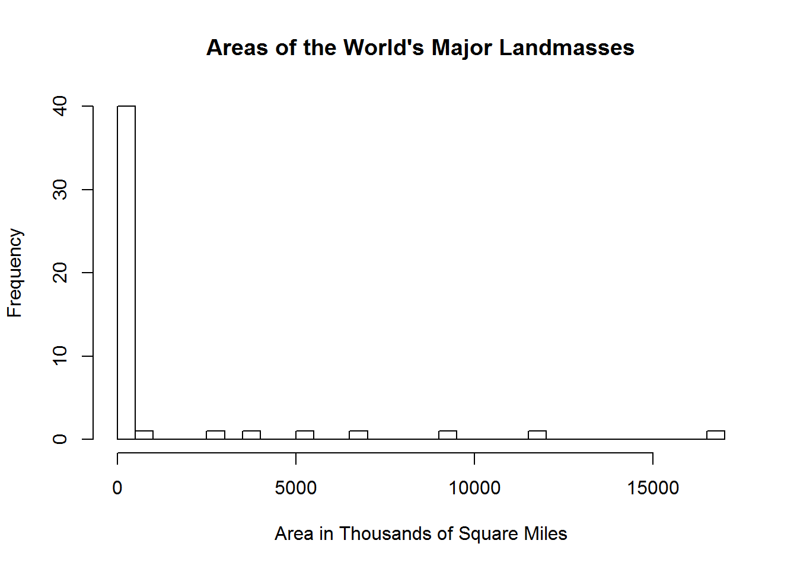
summary(islands)## Min. 1st Qu. Median Mean 3rd Qu. Max.
## 12.0 20.5 41.0 1252.7 183.2 16988.0Q4
lm(speed~dist, data=cars)##
## Call:
## lm(formula = speed ~ dist, data = cars)
##
## Coefficients:
## (Intercept) dist
## 8.2839 0.1656Q4 <- lm(speed~dist, data=cars)
predict(Q4, data.frame(dist=130), type='response')## 1
## 29.80769Q9
lane2<-subset(Highway1, lane %in% 2)
lane4<-subset(Highway1, lane %in% 4)
par(mfrow=c(1,2))
qqPlot(lane2$rate, xlab = " ", ylab = " ", main = " ")
qqPlot(lane4$rate, xlab = " ", ylab = " ", main = " ")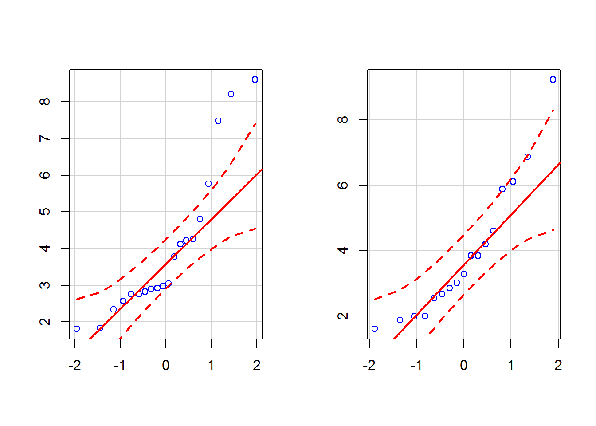
Q10
lmiris <- lm(Sepal.Length ~ Sepal.Width + Species, data=iris)
summary(lmiris)##
## Call:
## lm(formula = Sepal.Length ~ Sepal.Width + Species, data = iris)
##
## Residuals:
## Min 1Q Median 3Q Max
## -1.30711 -0.25713 -0.05325 0.19542 1.41253
##
## Coefficients:
## Estimate Std. Error t value Pr(>|t|)
## (Intercept) 2.2514 0.3698 6.089 9.57e-09 ***
## Sepal.Width 0.8036 0.1063 7.557 4.19e-12 ***
## Speciesversicolor 1.4587 0.1121 13.012 < 2e-16 ***
## Speciesvirginica 1.9468 0.1000 19.465 < 2e-16 ***
## ---
## Signif. codes: 0 '***' 0.001 '**' 0.01 '*' 0.05 '.' 0.1 ' ' 1
##
## Residual standard error: 0.438 on 146 degrees of freedom
## Multiple R-squared: 0.7259, Adjusted R-squared: 0.7203
## F-statistic: 128.9 on 3 and 146 DF, p-value: < 2.2e-16b <- lmiris$coefficients
b[1]+b[3]## (Intercept)
## 3.710136Q11
table(KidsFeet$length)##
## 21.6 22.5 22.9 23 23.6 23.7 23.9 24 24.2 24.4 24.5 24.6 24.7 24.8 25.1
## 1 1 2 1 2 1 1 4 2 2 3 1 2 1 1
## 25.2 25.4 25.5 25.7 26 26.1 26.7 27 27.1 27.5
## 1 1 2 1 2 3 1 1 1 1mean(KidsFeet$width~KidsFeet$name)## Abby Alisha Andy Caitlin Cal Cam Caroline Damon
## 9.50 8.80 9.20 8.70 9.10 9.80 8.70 8.80
## Danielle David Dwayne Dylan Edward Eleanor Erica Glen
## 9.30 8.95 9.30 9.00 9.60 9.30 9.00 9.40
## Hannah Hayley Heather Josh Julie Kate Lang Lars
## 8.50 7.90 9.50 9.20 9.30 7.90 8.90 8.80
## Laura Lee Leigh Maggie Mark Mike Peggy Peter
## 8.30 9.00 8.60 8.80 9.80 8.90 8.10 8.60
## Ray Scotty Teshanna Zach
## 8.90 9.70 9.00 9.70Q12
table(KidsFeet$name)##
## Abby Alisha Andy Caitlin Cal Cam Caroline Damon
## 1 1 1 2 1 1 1 1
## Danielle David Dwayne Dylan Edward Eleanor Erica Glen
## 1 2 1 1 1 1 1 1
## Hannah Hayley Heather Josh Julie Kate Lang Lars
## 1 1 1 2 1 1 1 1
## Laura Lee Leigh Maggie Mark Mike Peggy Peter
## 1 1 1 1 1 1 1 1
## Ray Scotty Teshanna Zach
## 1 1 1 1mean(KidsFeet$width~KidsFeet$name)## Abby Alisha Andy Caitlin Cal Cam Caroline Damon
## 9.50 8.80 9.20 8.70 9.10 9.80 8.70 8.80
## Danielle David Dwayne Dylan Edward Eleanor Erica Glen
## 9.30 8.95 9.30 9.00 9.60 9.30 9.00 9.40
## Hannah Hayley Heather Josh Julie Kate Lang Lars
## 8.50 7.90 9.50 9.20 9.30 7.90 8.90 8.80
## Laura Lee Leigh Maggie Mark Mike Peggy Peter
## 8.30 9.00 8.60 8.80 9.80 8.90 8.10 8.60
## Ray Scotty Teshanna Zach
## 8.90 9.70 9.00 9.70Q13
aaa<-subset(starwars, species %in% c("Wookiee","Gungan","Kaminoan"))
mean(aaa$height~aaa$species)## Gungan Kaminoan Wookiee
## 208.6667 221.0000 231.0000pander(kruskal.test(height ~ as.factor(species), data=aaa))| Test statistic | df | P value |
|---|---|---|
| 3.607 | 2 | 0.1647 |
Q15
plot(speed > 15 ~ dist, data=cars, ylab="Probability Speed > 15 mph", xlab="Stopping Distance (feet)")
KP.glm <- glm(speed > 15 ~ dist, data=cars, family=binomial)
pander(summary(KP.glm))| Estimate | Std. Error | z value | Pr(>|z|) | |
|---|---|---|---|---|
| (Intercept) | -3.687 | 1.043 | -3.534 | 0.0004099 |
| dist | 0.08824 | 0.02499 | 3.53 | 0.0004152 |
(Dispersion parameter for binomial family taken to be 1 )
| Null deviance: | 69.23 on 49 degrees of freedom |
| Residual deviance: | 43.35 on 48 degrees of freedom |
b<-KP.glm$coefficients
pvLR<-coef(summary(KP.glm))[2,4]
curve(exp(b[1]+b[2]*x)/(1+exp(b[1]+b[2]*x)), add=TRUE)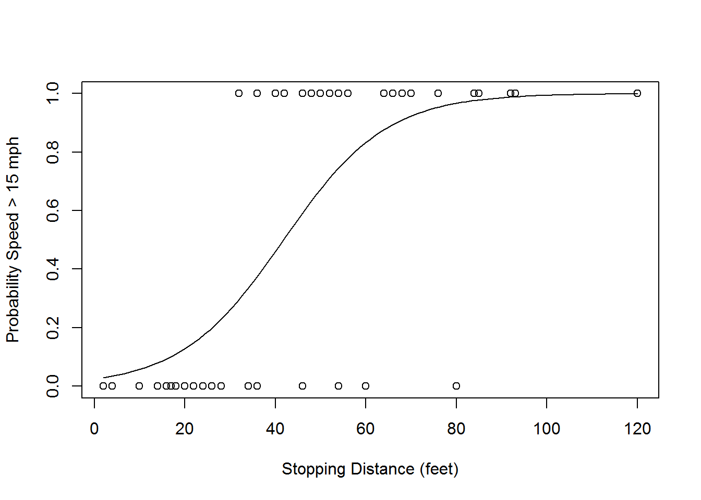
predict(KP.glm, data.frame(dist=70), type='response')## 1
## 0.9234143Q16
xyplot(length ~ sex, data=KidsFeet, group=domhand, type=c("p","a"), auto.key=TRUE)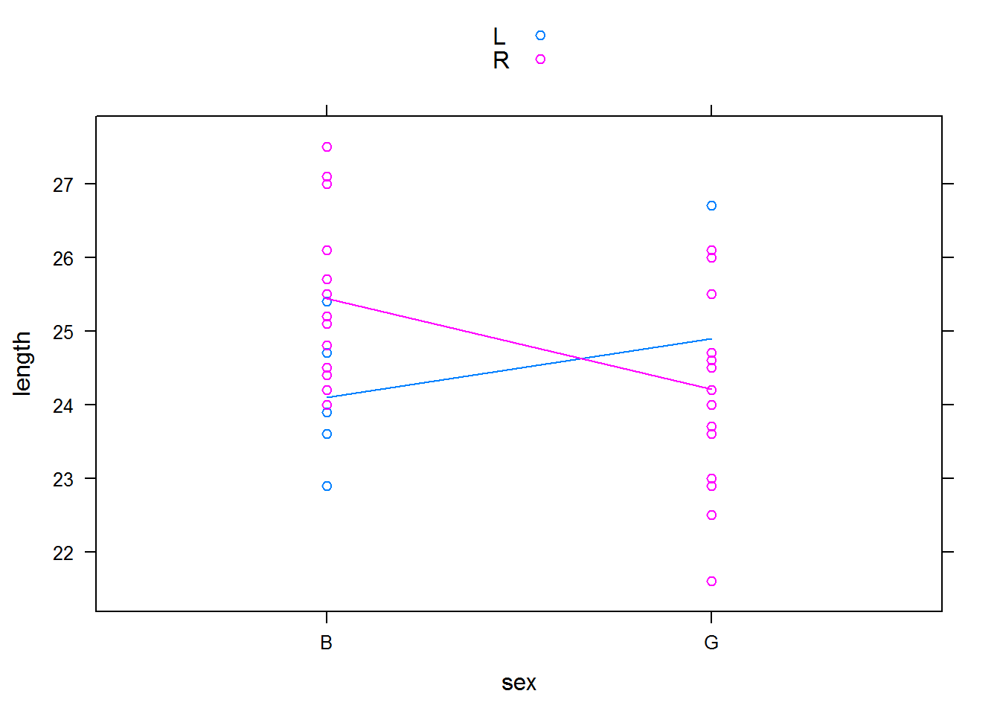
DCAOV<-aov(length ~ sex, data=KidsFeet)
DCAOV<-aov(length ~ sex + domhand + sex:domhand, data = KidsFeet)
pander(DCAOV, caption = "ANOVA results")| Df | Sum Sq | Mean Sq | F value | Pr(>F) | |
|---|---|---|---|---|---|
| sex | 1 | 5.988 | 5.988 | 4.026 | 0.05257 |
| domhand | 1 | 1.723 | 1.723 | 1.158 | 0.2892 |
| sex:domhand | 1 | 6.205 | 6.205 | 4.172 | 0.04868 |
| Residuals | 35 | 52.05 | 1.487 | NA | NA |
Q18
pander(kruskal.test(height ~ voice.part, data=singer))| Test statistic | df | P value |
|---|---|---|
| 141.8 | 7 | 2.096e-27 * * * |
boxplot(height ~ voice.part, data=singer, ylab=" ", xlab=" ",
col=c("gray","orangered"), main="",
horizontal=TRUE)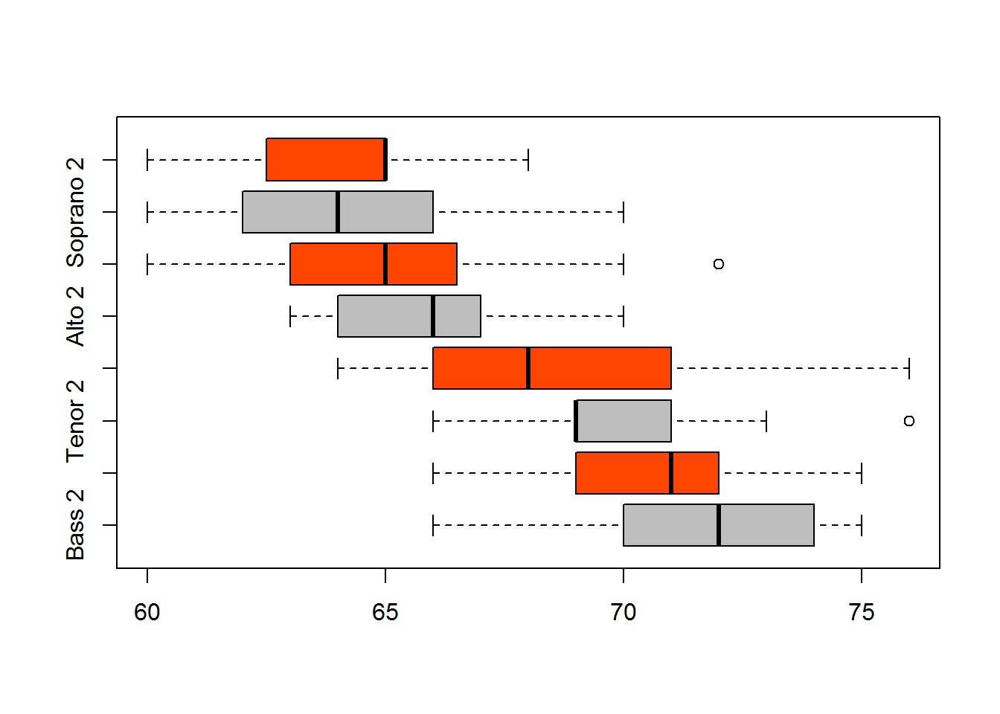
Q19
exp(.251)## [1] 1.28531Q21
t.test(height~sex, data=Galton)##
## Welch Two Sample t-test
##
## data: height by sex
## t = -30.662, df = 895.02, p-value < 2.2e-16
## alternative hypothesis: true difference in means is not equal to 0
## 95 percent confidence interval:
## -5.446293 -4.791018
## sample estimates:
## mean in group F mean in group M
## 64.11016 69.22882ttstat <- t.test(height~sex, data=Galton)$statistic
N <- 4321
permutedTestStats <- rep(NA, N)
for (i in 1:N){
permutedData <- sample(Galton$height)
permutedTest <- t.test(permutedData ~sex, data=Galton)
permutedTestStats[i] <- permutedTest$statistic
}
# The histogram of this distribution gives an interesting insight into the results
hist(permutedTestStats, xlim=c(-40,20),col = "skyblue",breaks=50, main="Permutation results",
xlab ="F",freq=FALSE)
abline(v = ttstat, lty=5 ,col = "red", lwd = 2)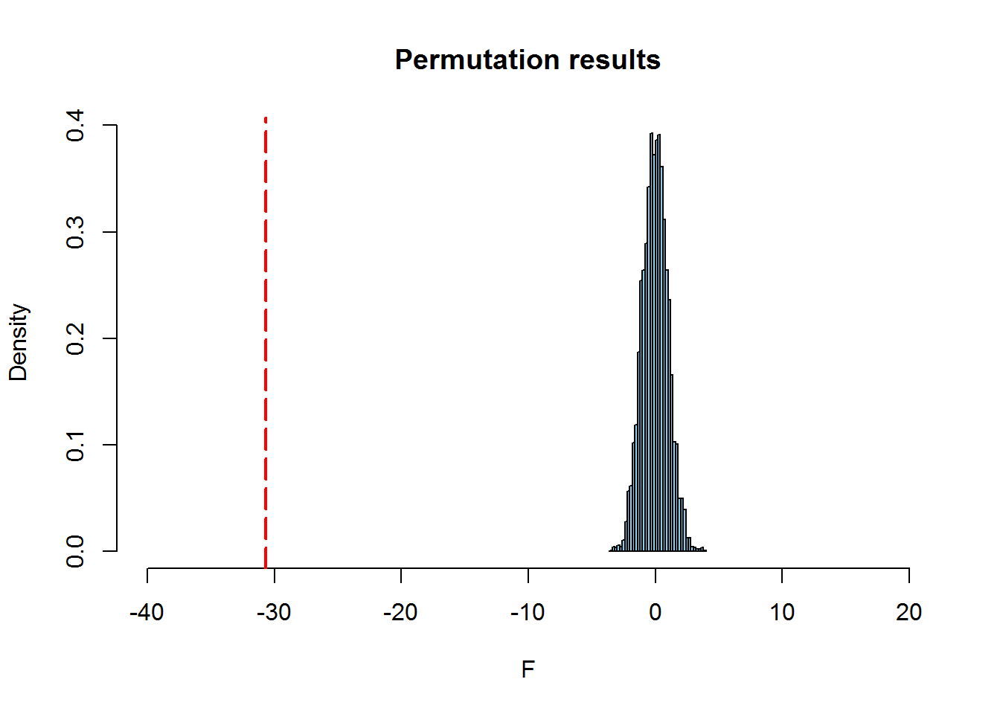
sum(permutedTestStats <= ttstat)/N## [1] 0Q22
pander(t.test(len ~ supp, data = ToothGrowth), mu = 0, alternative = "two.sided", conf.level = 0.95)| Test statistic | df | P value | Alternative hypothesis | mean in group OJ |
|---|---|---|---|---|
| 1.915 | 55.31 | 0.06063 | two.sided | 20.66 |
| mean in group VC |
|---|
| 16.96 |
Q23
aaaaa<-Highway1
aaaaa$lane<-as.factor(aaaaa$lane)
pander(wilcox.test(rate ~ lane, data=subset(aaaaa, lane %in% c("2","4"))))## Warning in wilcox.test.default(x = c(4.8, 4.22, 2.76, 2.34, 2.83, 1.81, :
## cannot compute exact p-value with ties| Test statistic | P value | Alternative hypothesis |
|---|---|---|
| 176 | 0.8669 | two.sided |
Q24
mean(rate ~ htype, data=subset(Highway1, htype %in% c("MC","FAI","PA","MA")))## FAI MA MC PA
## 2.872000 4.870000 3.585000 3.608421Q25
barplot(rbind(`Male`=c(Marvel=22, DC=28), `Female`=c(Marvel=43, DC=6)), col=c("gray44","gray84"), beside=TRUE, legend.text=TRUE)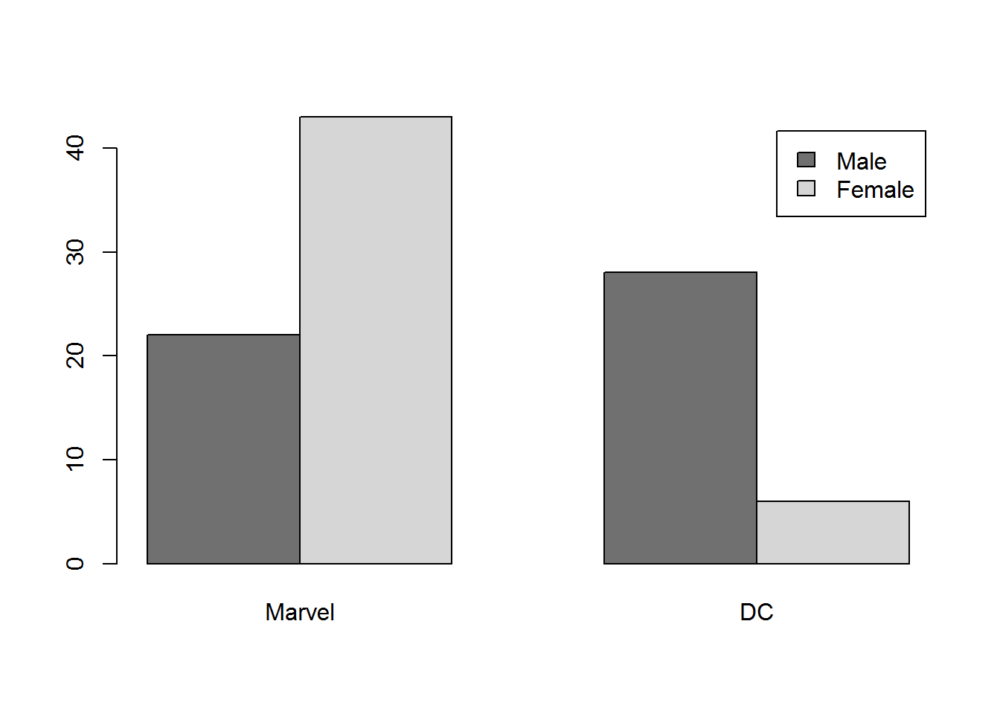
pref <- matrix(c(22,28,43,6),ncol=2,byrow=TRUE)
colnames(pref) <- c("Male","Female")
rownames(pref) <- c("Marvel","DC")
pref <- as.table(pref)
pref## Male Female
## Marvel 22 28
## DC 43 6pander(pref)| Male | Female | |
|---|---|---|
| Marvel | 22 | 28 |
| DC | 43 | 6 |
chipref <- chisq.test(pref)
pander(chipref)| Test statistic | df | P value |
|---|---|---|
| 19.12 | 1 | 1.23e-05 * * * |